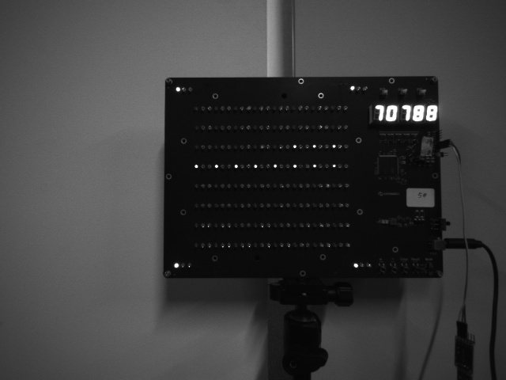

在 Gemini330 系列相机中使用 interleave_ae
本节介绍如何在 Gemini 330 系列相机中使用 interleave_ae（相机固件最低版本 1.4.00）
参数介绍
interleave_ae 相关参数在 gemini_330_series.launch.py 中设置
interleave_ae_mode：设置激光或 hdr 交错。interleave_frame_enable：启用交错帧模式。interleave_skip_enable：启用跳帧模式。interleave_skip_index：设置为 0 跳过图案 ir，设置为 1 跳过泛光 ir。
interleave hdr
当 interleave_ae_mode 参数设置为 hdr 且 interleave_frame_enable 设置为 true 时，将启用 interleave hdr
hdr_index1_laser_control：帧 1 激光开关设置。hdr_index1_depth_exposure：帧 1 深度曝光值设置，非 AE 模式。hdr_index1_depth_gain：帧 1 深度增益值设置，非 AE 模式。hdr_index1_ir_brightness：帧 1 ir 增益值设置。hdr_index1_ir_ae_max_exposure：AE（自动曝光）中帧 1 ir 最大曝光值设置。hdr_index0_laser_control：帧 0 激光开关设置。hdr_index0_depth_exposure：帧 0 深度曝光值设置，非 AE 模式。hdr_index0_depth_gain：帧 0 深度增益值设置，非 AE 模式。hdr_index0_ir_brightness：帧 0 ir 增益值设置。hdr_index0_ir_ae_max_exposure：AE（自动曝光）中帧 0 ir 最大曝光值设置。
interleave laser
当 interleave_ae_mode 参数设置为 laser 且 interleave_frame_enable 设置为 true 时，将启用 interleave laser
laser_index1_laser_control：帧 1 激光开关设置。laser_index1_depth_exposure：帧 1 深度曝光值设置，非 AE 模式。laser_index1_depth_gain：帧 1 深度增益值设置，非 AE 模式。laser_index1_ir_brightness：帧 1 ir 增益值设置。laser_index1_ir_ae_max_exposure：AE（自动曝光）中帧 1 ir 最大曝光值设置。laser_index0_laser_control：帧 0 激光开关设置。laser_index0_depth_exposure：帧 0 深度曝光值设置，非 AE 模式。laser_index0_depth_gain：帧 0 深度增益值设置，非 AE 模式。laser_index0_ir_brightness：帧 0 ir 增益值设置。laser_index0_ir_ae_max_exposure：AE（自动曝光）中帧 0 ir 最大曝光值设置。
运行启动文件
设置 interleave_ae 参数，重新 colcon build 并运行启动文件
ros2 launch orbbec_camera gemini_330_series.launch.py
示例可视化


Multi_camera_synced + Interleave_ae
请参考 multi_camera_synced 和 参数介绍